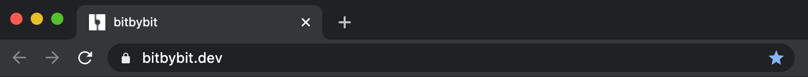

What You Will Learn
In this tutorial we will introduce you to the basics of BitByBit User Interface (UI). After finishing this tutorial you will understand the principles of how different areas are composed together and learn how visual programming canvas interacts with the 3D world behind it. You will also create your first script, drop your first component into the "Code Canvas", run it and save it.
Required knowledge
- General understanding of how to use the web browser
Open BitByBit
First thing we need to do is open bitbybit.dev website. If you click the provided link, you should navigate to bitbybit.dev page.
When website finishes loading you will be presented with modal popup containing examples. There are three main categories of examples:
- Beginner
- These examples are meant for people who never tried coding and are just starting out. Scripts are made in a way that provides very short snippet of code having 3D output. Examples are meant to introduce basic programming and 3D entity concepts.
- Street Smart
- These examples are for people who like to get challenged. The scripts in this category get longer and more complicated. While difficulty increases, script size is still quite limited not to overload the braing with difficult concepts.
- Ninja
- Examples under this category are meant for more advanced users that are willing to go extra mile and understand better not only the 3D concepts, but things like promises, JSON data structures, scientific simulations, etc. While Ninja examples are more challenging, they are still meant to be used to teach you the basic concepts of programming and 3D modelling. These examples do not represent the limits of bitbybit.dev. The only limit is your creativity.

To practice using the examples please navigate to the "Ninja" category and open up the "Magic Spiral" example by clicking on the image. Depending on your computer, it may take a while for example to open up. When code on the canvas appears with the spiral beneath it, continue to read the next chapter.
Main UI Areas
UI of bitbybit.dev is clearly separated into 5 main areas that drive the whole application.

- Control Panel
- This area of the UI is providing buttons for executing the scripts, switching between "Code Canvas" and "3D Canvas", cleaning up the scripts, opening examples and navigating to various additional resources related to the platform, like social media pages.
- Categories
- Every block of bitbybit.dev platform exists under some sort of category. Categories are structured based on domain specificity. There are many categories that represent 3D entities, some represent programming concepts. Categories that are prefixed with arrow buttons contain Subcategories.
- Flyout Category Components
- When you click through categories, right hand flyout appears with blocks of code that are available under each particular category. Try clicking "Transforms" category and you will see the components available as in the screenshot above. You can drag and drop components from flyout onto the "Code Canvas".
- Code Canvas
- It takes the largest proportion of the UI, because main work happens in this area. It also overlays the "3D Canvas" that exists beneath the "Code Canvas". You can switch between the two by clicking "Swap Canvas" button from "Control Panel" area. In this area you can zoom in/out to the script you are editing by clicking +/- buttons on the lower right corner of the UI or by using your mouse scroll button. This canvas holds all the script components that will be taken into account when you click "Run The Code" button in "Control Panel" area.
- 3D Canvas
- This area represents the result of your code. When bitbybit.dev starts, it is overlayed by the "Code Canvas", but you can enter it by clicking the "Swap Canvas" button from "Control Panel" area. When "3D Canvas" gets activated, you can analyze your 3D scene and objects that the script has created. It is the area that presents the result of your code. Default rotation camera is integrated, thus you can easily rotate around, zoom in or out to the environment of your creation.
Writing Your Own Script
You have just learned a few things about UI and managed to open the example. Hopefully this was not too difficult and you are ready to continue. If all is good, you have "Magic Spiral" example currently open.

To start fresh click "Clean Canvas" button in "Control Panel" area as shown in the above picture. Your canvas should now be clean and you should see completely white background with nothing opened.
- Click on the "Scene" category from "Categories" area.
- Find the component that "Draws gridMesh", drag and drop it on the "Code Canvas".
- Click "Run The Script" button. You should now see the 3D grid appear in the background of "Code Canvas".
- Click "Swap Canvas" button. Hold down the left mouse button on "3D Canvas" and drag to rotate around the center of the grid.
The following video shows previously explained steps in action.
YouTube Video Explanation
Do not forget to check the "Introduction to UI" YouTube video giving recorded demonstration on how the areas interact with each other and how to drag and drop the blocks from the "Category Flyout" onto the "Code Canvas" as a refresher of what we have just learned.
Congrats!
You have just finished "Introduction to UI" tutorial and dropped your very first component on the "Code Canvas". Your journey is just beginning, please continue.